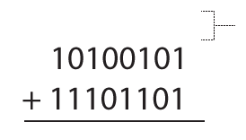
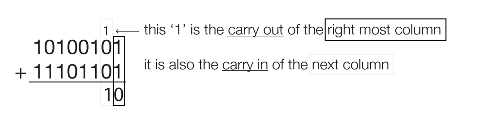
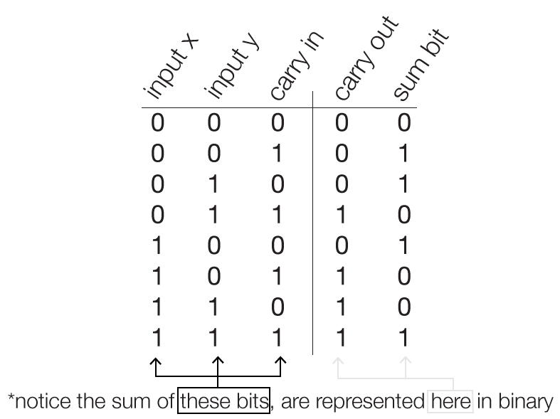
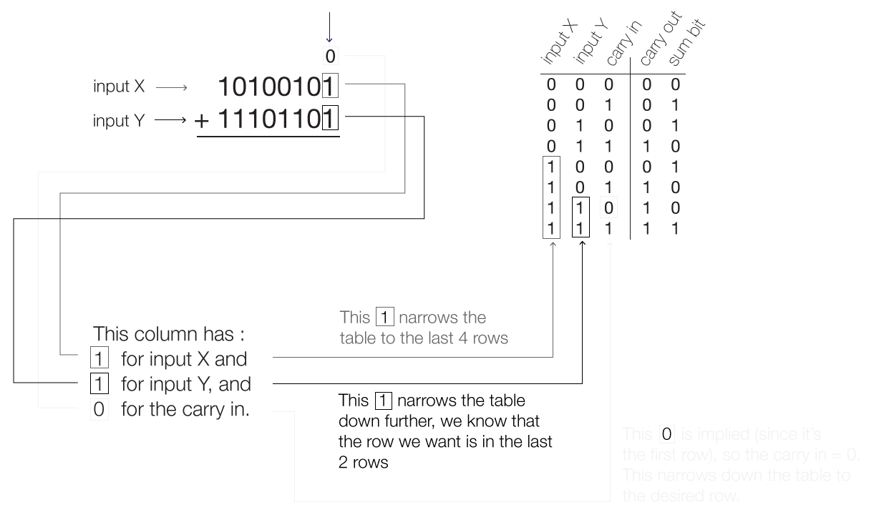
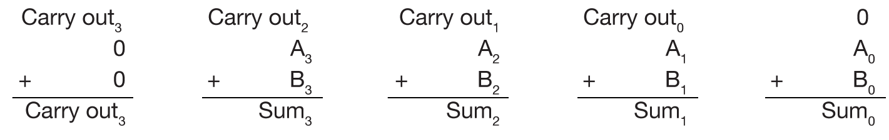
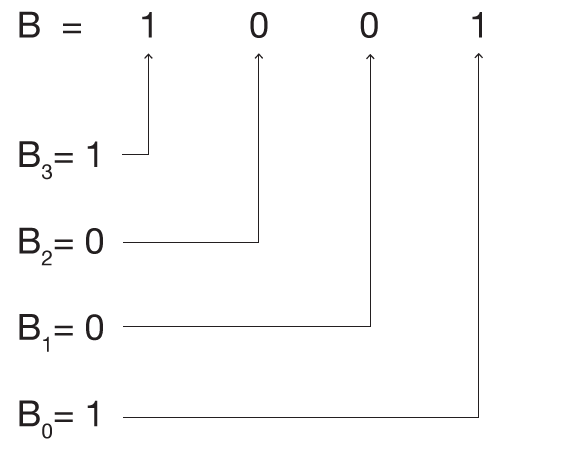

Fundamentals of Digital Design
In the same way we use the letters ‘C’, ‘A’, and ‘R’ to represent the word ‘car’, and the word ‘car’ to represent the concept of the automobile, computers use ‘0’s and ‘1’s to represent words, instructions, rules, everything.
The two states (state 0 and state 1) describe an entire world of software. For example:
and 1000001 represent ‘A’,
and 1010010 represent ‘R’,
all information can be written in binary.
the chance of misinterpreting signals is low, and as a result, there are less likely to be errors.
The system that most of us are familiar with is the base 10 system (i.e., 1 2 3 4 5 6 7 8 9 0), also called decimal.
Base 16 system has 16 symbols (0 1 2 3 4 5 6 7 8 9 A B C D E F) and is also called hexadecimal.
There are only two numbers in the binary numbering system: ‘0’ and ‘1’. It is a base 2 system.
A letter or a subscript is used to denote the radix:
0b110010 and 1100102 are in binary (base 2)
50 and 5010 are in decimal (base 10)
Since there are only two numbers in binary, we interpret the value of the number by the position of the numbers.
Decimal is the most familar radix, thus we start by converting binary into decimal.
First, realize that for every position left of the number, the value of that number increases by 2n.
We multiply the 0 or 1 by their position, and add the sum to convert the number into decimal.
The second position is multiplied by 21.
The third position is multiplied by 22.
(A fourth position would be multiplied by 23,
and a fifth position would be multiplied by 24.)
For addition to be useful, the number of bits must be magnitudes larger.
Column addition is a common method to work out addition, that is shows how carry - overs work.
Since there are only two numbers in the binary numbering system, it lends itself to other interpretations. The two numbers, ‘0’ and ‘1’ can represents states, like on and off, true and false, or HIGH and LOW signals.
Boolean algebra has its own rules, notations, and operations. There are three basic operations, AND, OR, and NOT. The gates pictured to the right are symbols that represent Boolean algebra operations. Similar to a plus or minus symbol, they represent an operation taking place that produces a single result.
These gates also represent physical electrical components, which can be used to build and control circuits, and which, in turn can be used to build
Each of the gates have inputs on the left hand side. The AND and OR gates pictured here take 2 inputs each, and result in one output. There are more logic gate symbols and operations, but these are the basics. To gain an idea of how the AND, OR, and NOT operations work, consider ‘0’ is ‘false’ and ‘1’ is ‘true’.
This is an AND gate symbol.
This is an OR gate symbol.
This is an NOT gate symbol.
You can click on the purple elements
to change the diagrams.
The diagram above shows how a series of transistors (three transistors in this diagram) can be arranged so that the inputs and output to the grouping behaves as an AND gate.
Each of the gates presented before (AND, OR, NOT, NOR, NAND, XOR, etc.) can be made using transistors.
Many mathematical concepts and solutions can be created through transistors, this is the basis of computers and machines: to produce a desired output by creating a correct electrical path.
You can click on the purple elements
to change the diagrams.
The diagram above shows how a series of transistors (three transistors in this diagram) can be arranged so that the inputs and output to the grouping behaves as an OR gate.
You can click on the purple elements
to change the diagrams.
The diagram above shows how a series of transistors (five transistors in this diagram) can be arranged so that the inputs and output to the grouping behaves as an XOR gate.
Examining the XOR gate transistors, you can see that the XOR diagram is made up of a combination of the previous AND gate pattern and the previous OR gate pattern.
The output of the half-adder circuit has 2 outputs, with the output of the AND gate acting as the carry, or "over flow", when the sum is bigger than one digit.
This happens when x=1 and y=1, and subsequently the carry=1 and sum=0, which is read as output=10, the correct sum of 1+1=10.
Click on the purple gate labels
to see the truth tables, and on
the inputs to change the diagram.
x=0 and y=0 then 0+0=0 (the sum = 0).
x=0 and y=1 then 0+1=1 (sum is 1).
x=1 and y=1 then 1+0=1 (sum is 1).
x=1 and y=1 then 1+1=10 (sum is 10)*.
In the special case where x=1 and y=1, the result needs 2 bits to accurately describe the sum.
In other cases, (0+0, 0+1, 1+0), only 1 bit is necessary to accurately describe the sum.
However, there is no input for “carrying over” when using just the half-adder.
This is where the full adder comes into play. The full-adder has an extra input called the ‘carry in’ or commonly denoted by ‘Cin’.
A full adder is made up of two XOR gates, two AND gates, and one OR gate.
The above animation shows that another way to interpret the scheme of the full adder is to imagine that it is composed of two half adders. Click 'start' to begin the animation.
In column addition, there is a need for a 'carry in'.
This ‘phantom row’ is the row in which all the carry in’s get placed.
When a column has a carry over (a figure 1) on top of it, the result of that row is the sum of 3 numbers:
the original two numbers,
plus the additional carry over.
For n-inputs, we know there are 2n unique combinations for inputs.

The addition of a third input means that there are more combinations of addition.
A truth table for a full-adder reveals how the carry in can influence the result:
Let’s take a look at binary addition again, this time keeping notice of the carry ins and carry outs.
We begin with the right most column, and this time, we can look at how reading the truth table could help us.
When we add up the second column, we can use the truth table, however realize that the carry out from the last computation, is now the carry in to the next addition.
From the truth table,
the sum bit is 1 ,(0+0+1=1)
and the carry out bit is 0.
This continues left, carrying over as necessary. When the carry out bit = 0, it is usually omitted, and understood that ‘nothing’ is added.
The maximum an addend can be is 11112. (recall: 11112 = 1510)
Since the adder is going to sum the LSB (least significant bit) of A with the LSB (least significant bit) of B, then every corresponding bits after that, it is clarifying to name each bit.
So when we add them together, roughly, it would look something like this:

Similarly for B:

Notice that the “carry-outs” are the “carry-ins” for the next column.
Note that each of the inputs (x, y, carryin) and outputs (sum, carryout) are 1 bit signals. Paired with each equation, we would need 4 full adders to create the
5-bit wide sum:
*the final carryout represents the MSB (most significant bit) of the sum
Carry in2=Carry out1
Carry in3=Carry out2
Carry in4=Carry out3*
Electricity traveling through logic gates is very fast, but not simultaneous. In order for the next full adder to start it’s computation, it must receive the carry in signal from the last full adder.
The full adder following also has to wait for the one before it to get last bit of the sum.
This waiting time is called propagation delay.
This lag is exacerbated when larger number of bits are being added together.
There are other types of adders. The most efficient currently is called the Carry-Look Ahead Adder. The trade off with the Carry-Look Ahead adder is that it uses many more logic gates than the Ripple-Carry Adder, but is much faster.
However, if the circuit could recieve all of carrys at the same time, then all the bits of the sum would occur at once, instead of obtaining them one bit at a time.
c1 = g0+p0c0
c2 = g1+p1c1
c3 = g2+p2c2
c4 = g3+p3c3
ci+1 = gi+pici
where :
i goes from 1 to 4,
c0 is the intial carry in,
gi is called the ‘generate’ term, from Ai AND Bi
pi is called the ‘propagate‘ term, from Ai OR Bi
c1 = g0+p0c0
c2 = g1+p1c1 = g1+p1(g0+p0c0)
c3 = g2+p2c2 = g2+p2(g1+p1(g0+p0c0))
c4 = g3+p3c3 = g3+p3(g2+p2(g1+p1(g0+p0c0)))
When there are more bits being added, say in a 16-bit or 32-bit adder, the number of logic gates increases, but it takes the same amount of time to arrive at the sum.
The Hardware / Software Interface
David Patterson and John L. Hennessy, 4th Edition
ISBN 978-0-12-374493-7
2009, Morgan Kaufmann Publishers
Digital Design: Principles and Practices
John F. Wakerly, 3rd Edition - updated
ISBN 0-13-089891-1
2001, Prentice Hall
Fundamentals of Electrical Circuits
Charles K. Alexander and Matthew N.O. Sadiku,
3rd Edition
ISBN 10-0-07-297718-3
2007, McGraw-Hill
David M. Harris and Sarah L. Harris, 2nd Edition
ISBN 978-0-12-394424-5
2013, Morgan Kaufmann Publishers